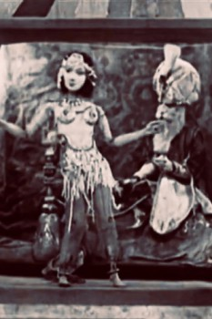

Tony Sarg's Marionettes in the Orient (1929)


Country:United States, 8 minutes
Spoken languages:
Genres:Music
Director(s):Basil Smith
Writer(s):
Video Codec:Unknown
Number: 6516
IMDb Rating:

Certification:
Storyline:
A marionette musical from Tony Sarg's show.
Cast:
Tony Sarg
Medium: Media file,
Location: D:\Puppetry\Tony Sarg's Marionettes in the Orient.mp4
Loaned: No
Aspect ratio: Unknown